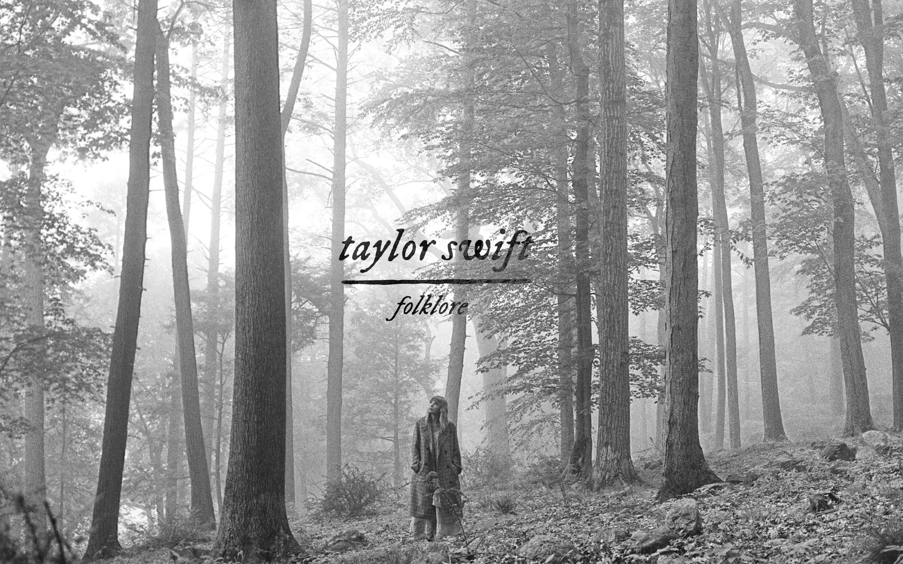
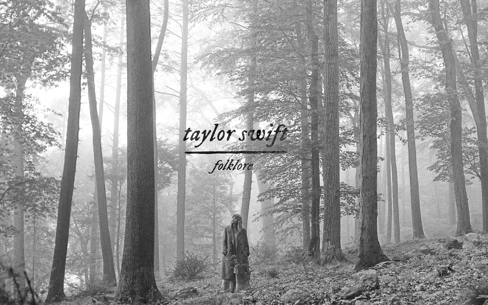
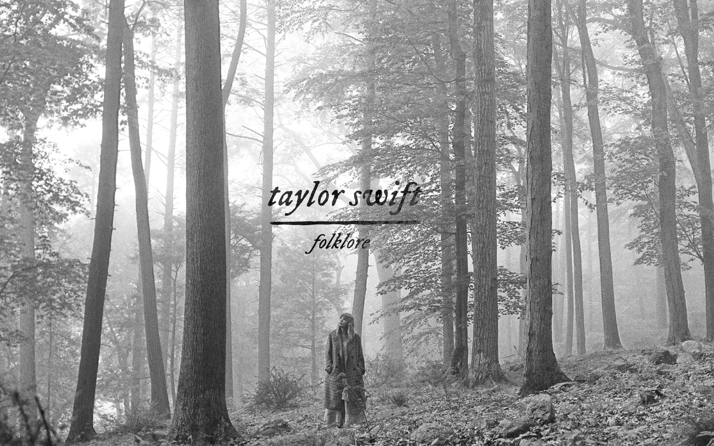
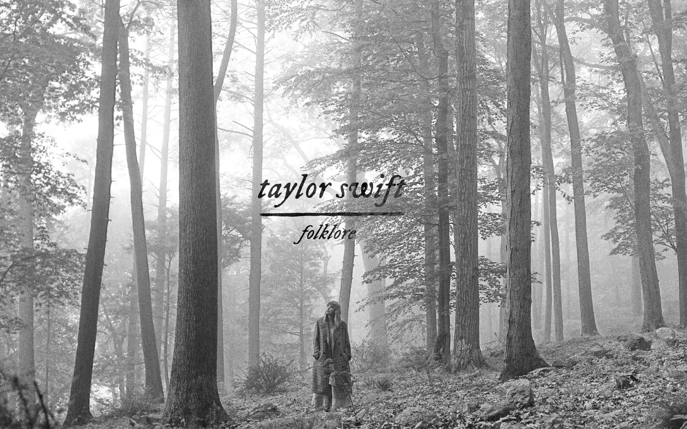

Folklore es el octavo álbum de estudio de Taylor. Fue un álbum sorpresa, lanzado el 24 de julio de 2020, once meses después Lover (2019). Con la producción y composición a manos de la propia Taylor, Jack Antonoff y Aaron Dessner, el álbum se aparta de los sonidos mainstream y se destaca por melodías armónicas e introspectivas, una interpretación lírica más trabajada y una utilización más consistente de la instrumentalización (principalmente piano, guitarra, violín y batería).
El proyecto se adentra a géneros poco explorados como el indie folk, el rock alternativo y el electro-folk, lo que implicó un nuevo cambio de sonido y estética para la ella. La cantante escribió y grabó el álbum durante la pandemia de COVID-19, concibiéndolo como «una colección de canciones e historias que fluyeron como una corriente de conciencia de su imaginación».
Folklore cuenta con 16 canciones y dura un total de 1 hora con 3 minutos. Es uno de los álbums mas complejos de Taylor ya que las letras se alejan de experiencias propias y cuentan historias.
Una de las historias que se cuentan dentro de Folklore es la de un triángulo amoroso. Todo comienza en Betty, una canción que dura 04:54 y duele toda la vida, en ella James nos va a contar como a sus 17 años se dejó llevar y traicionó a Betty con otra chica. Esta historia continúa en August que en sus 04:21 nos va a mostrar la perspectiva de esa otra chica, la tercera en discordia; ella nos va a decir "Wanting was enough, for me, it was enough...To live for the hope of it all, cancel plans just in case you'd call". Finalmete conocemos el descenlace de este triángulo amoroso en Cardigan, donde Betty nos va a contar como James la hacía sentir "You drew stars around my scars" y que, a pesar de que él le hizo daño, ella decidió perdonarlo porque sabía que él volvería.
Una de mis canciones favoritas y, la más desgarradora de este álbum a mi parecer, es Exile. En ella se le canta a un amor que se fue y nos dejó desvastados, esa sensación de hogar que nos otorga la persona que amamos nos deja cuando esa persona ya no está y nos convertimos en exiliados, personas sin patria. "So step right out, there is no amount of crying I can do for you".
Como mencioné anteriormente, Folklore es mi álbum favorito por la profundidad de sus letras y lo viscerales y desgarradoras que pueden ser por momentos. Te dejo a continuación un carrousel con screenshots tomados a mis partes favoritas de algunas canciones.
Si querés escuchar Folklore, podés hacerlo haciendo click en cualquiera de las dos imágenes.